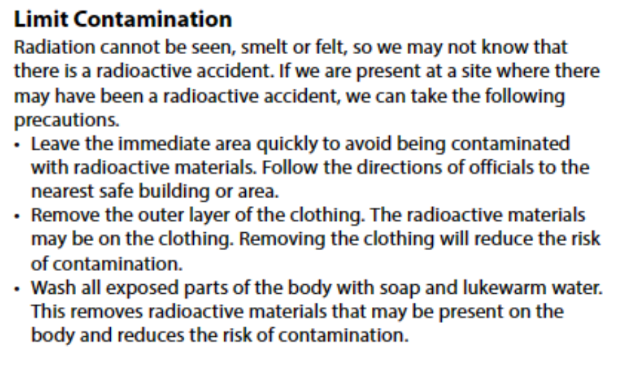
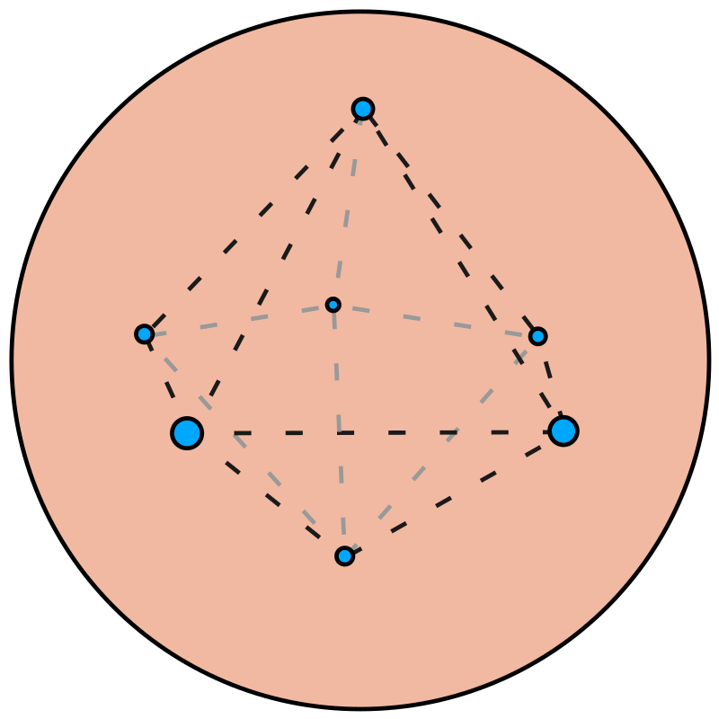

The diagnosis of some diseases may be carried out using a source of $\gamma$-radiation.
The patient is injected with a radioactive chemical and a scanner is used to trace the path of the chemical.
### 10.8: Using Radioactivity
##### Tracers
* The progress of a small amount of a weak radioisotope injected into a body can be traced by a GM tube
* The method is used in medicine to detect brain tumours and internal bleeding.
* A tracer should be a source of *beta radiation* or *gamma radiation*
* This is so it is not blocked by the skin and does not cause radiation damage
* A tracer should be chosen whose *half-life is short*
* An isotope is chosen if its half-life matches the time needed for the experiment so it will not pose a radiation threat.
* It should also be *non-toxic* since it will be injected in the blood.
### 10.8: Using Radioactivity
##### Tracers
**Examples of tracers:**
* **technetium-99** is the most widely used tracer. It emits pure gamma radiation, its half life is around 6 hours, and it is non-toxic.
* **Gallium-68:** emits beta radiation and has a half-life of 68 minutes and is non-toxic.
* **Flourine-18:** emits beta radiation and has a half-life of 110 minutes. It helps us observe the brain, heart, thyroid glands and bones.
* **Rubidium-82:** acts similar to potassium in the body. So it is used to trace the movement of potassium. It has a half-life of only 1 minute but the patient will experience high radiation levels for that time.
10.8: Using Radioactivity
Tracers
10.8: Using Radioactivity
Tracers
10.8: Using Radioactivity
Radiation Therapy
It is increasingly common to receive radiation as part of a treatment for cancer.
In External Beam Therapy, source of ionizing radiation is directed at the tumour that needs to be destroyed.
### 10.8: Using Radioactivity
##### Radiation Therapy
* *$\gamma$-radiation* is chosen because of its high penetrating power and its ionization is low enough to be controlled.
* The gamma source moves around the patient aiming at the tumour from different directions.
* This is so other tissues receive only a small dose of radiation.
* Radiation therapy is often combined with chemotherapy
10.8: Using Radioactivity
Smoke Alarm
A smoke alarm consists of a battery, an alarm device and two ionisation chambers which are identical, except for one being open to the air and the other closed.
Each chamber contains two electrodes with a p.d. applied across them from the battery.
### 10.8: Using Radioactivity
##### Smoke Alarm
* A small radioactive source (*americium-241*) in each chamber emits $\alpha$-particles
* these alpha particles ionize the air molecules of the air molecules
* the air ions move towards the electrodes and a current flows
* Since conditions are the same in both chambers, the small current produced in each is the same.
* When smoke enters the chamber open to the air, the motion of ions is disturbed when they adhere to smoke particles.
* The current falls and the difference from the unchanged current in the closed chamber is detected electronically and the alarm is activated.
10.8: Using Radioactivity
Smoke Alarm
$\alpha$-particles are chosen because they do not
travel far in air so do not pose a health risk
A source with a long half-life is preferred so that a constant activity is maintained.
The Americium source used in smoke detectors has a long half-life of about 430 years.
10.8: Using Radioactivity
Sterilization of medical equipment
$\gamma$-radiation is used to sterilise medical instruments by killing bacteria.
Syringes, scalpels and other instruments are sealed in plastic bags and then irradiated with rays from Cobalt-60
10.8: Using Radioactivity
Sterilization of food
It is also used to irradiate food, killing bacteria to preserve the food for longer.
### 10.8: Using Radioactivity
##### Sterilization of food
* Because these organisms are single-celled, any cell damage kills the entire organism.
* The radiation is safe to use as no radioactive material goes into the food.
* $\gamma$-radiation is chosen because it can pass through packaging and a long half-life source is preferred so that a constant activity is maintained.
* This has been used to make food for space missions
$$^{60}\_{27}\text{Co} \to ^{60}\_{28}\text{Ni} + \beta^- + \overline{v} + \gamma$$
10.8: Using Radioactivity
Checking thickness of sheets
If a radioisotope is placed on one side of a moving sheet of material and a GM tube on the other, the count-rate decreases if the thickness increases.
### 10.8: Using Radioactivity
##### Checking thickness of sheets
* This technique is used to control automatically the thickness of paper, plastic and metal sheets during manufacture.
* Because of their range, $\beta$ emitters are suitable sources for monitoring the thickness of thin sheets but $\gamma$ emitters would be needed for thicker materials as they are more penetrating and are absorbed less.
* The half-life of the source should be long so that its activity remains constant over time.
### 10.8: Using Radioactivity
##### Carbon Dating
* Carbon-14, is taken in by living plants and trees along with non-radioactive carbon-12.
* When a tree dies no fresh carbon is taken in.
* The carbon-14 continues to decay, with a half-life of 5700 years, the amount of carbon-14 compared with the amount of carbon-12 becomes smaller.
* The number of carbon-14 atoms is counted using a *mass spectrometer*
* By measuring the residual radioactivity of carbon-containing material such as wood, linen or charcoal, the age of archaeological remains can be estimated within the range 1000 to 50 000 years
10.8: Using Radioactivity
10.8: Using Radioactivity
10.8: Using Radioactivity
### 10.8: Using Radioactivity
##### Precautions while using radioisotopes
* The increasing use of radioisotopes has made it important to find safe ways of transporting and using radioactive materials
* It is also important to know how to dispose of radioactive waste.
* A variety of methods are used for storage of radioactive waste:
* Waste with very low levels of radioactivity is enclosed in steel containers and buried in concrete bunkers
* Waste with high levels of radioactivity is immobilised in glass or synthetic rock and stored deep underground.
### 10.8: Using Radioactivity
##### Precautions for the lab
* The weak sources used at labs should always be:
* lifted with forceps while using gloves
* held away from the eyes
* kept in their boxes when not in use
* Always wear protective clothing like lab coats, shoe covers and safety glasses
* When moving a radioactive source, make sure it is in a suitable container
### 10.8: Using Radioactivity
##### Precautions for the lab
* To reduce exposure to ionising radiations:
* exposure time to the radiation should be minimised
* the distance between a source and a person should be kept as large as possible
* people should be protected by the use of shielding which absorbs the radiation.
### 10.8: Using Radioactivity
##### Precautions for the industry
* In industry, sources are handled by long tongs and transported in thick lead containers.
* Workers are protected by lead and concrete walls, and wear radiation dose badges
* All radioactive materials should be kept in sealed and clearly labelled lead boxes.
10.8: Using Radioactivity

10.9: Atoms and Particles (1)
Electrons were discovered in 1896 by the English physicist J. J. Thomson
He also discovered that electrons were much smaller and lighter than atoms.
An early theory called the plum-pudding model regarded the atom as a positively charged sphere in which the negative electrons were distributed.

10.9: Atoms and Particles (1)
The experiments by Geiger and Marsden on the scattering of $\alpha$-particles from thin metal films
provided evidence for the nuclear model of the atom.
The behaviour in this experiment was then explained by Ernest Rutherford
10.9: Atoms and Particles (1)
10.9: Atoms and Particles (1)
10.9: Atoms and Particles (1)
### 10.9: Atoms and Particles (1)
* The problem with the Rutherford model was that it couldn't explain the behaviour of elements emitting light
* If we observe an element being burned, or emitting light when a current passes through it, we see they emit light in very specific colours
* Shortly after Rutherford, **Niels Bohr** a Danish physicist, developed a better idea to explain how an atom emits light.
* He suggested that the electrons circled the nucleus at high speed being *kept in certain defined orbits*
* He pictured atoms as miniature solar systems electrons may jump to an outer orbit.
* The atom is then said to be **excited**.
* Very soon afterwards the electrons return to an inner orbit
* energy is then thrown out by bursts of photons as infrared light, ultraviolet or X-rays.
10.9: Atoms and Particles (1)
10.9: Atoms and Particles (1)
10.9: Atoms and Particles (1)
10.9: Atoms and Particles (1)
The wavelength of the radiation emitted depends on the two orbits between which the electrons jump.
If an atom gains enough energy for an electron to escape altogether, the atom becomes an ion and the energy needed to achieve this is called the ionisation energy of the atom.
10.9: Atoms and Particles (1)
The Rutherford–Bohr model was replaced by a mathematical model developed by Erwin Schrödinger
Regions of the atom where the mathematics predicts that electrons are more likely to be found are represented by denser shading
This gives us an idea of the electron cloud surrounding a nucleus
10.9: Atoms and Particles (1)
10.10: Atoms and Particles (2)
A fundamental particle is a particle not made up of other particles
Scientists study these fundamental particles using particle colliders